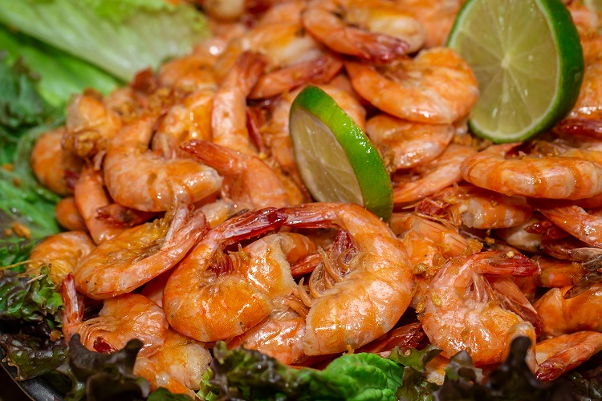

Voltar
Camarão ao Alho e Óleo

Descrição
Recomenda-se uma duplo malte para acompanhar!
Ingredientes
- 1 kg e 200 g camarão médio
- 1/2 xícara de óleo
- 10 dentes de alho
- Sal a gosto
Modo de Preparo
- Lave os camarões com casca, retirando-lhe a cabeça.
- Descasque os dentes de alho, cortando-os ao meio.
- Frite bem o alho no óleo (bem passado).
- Coloque os camarões em uma panela com tampa, polvilhando com um pouco de sal, até ficarem dourados.
- Coloque em uma vasilha, despejando sobre o mesmo, o óleo com o alho.
- Sirva com cerveja tipo capa de neve.